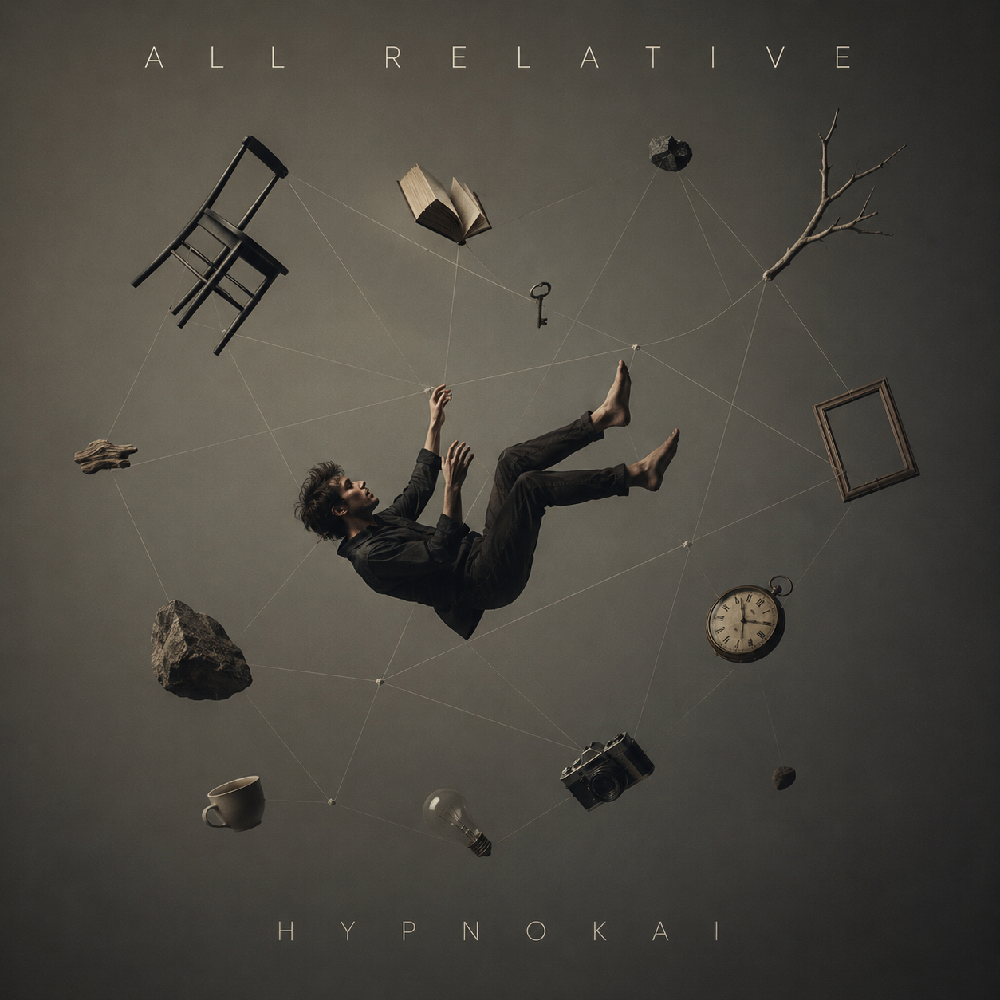

Structuring operations, logic, and sound.
01 — Operations
Managing complex environments and retail infrastructure across the metropolitan region. My background is in aligning teams, managing high-volume logistics, and building the internal, modular tools that make daily operations seamless and efficient.
02 — Logic
Exploring the mechanics beneath the interface. My current focus is diving into computer science and physical systems—studying how things actually work at a fundamental level. I build modular, local-first applications and write code to solve tangible problems, treating software as a practical extension of systems thinking.
HYPNOKAI.
Artist · Lead Vocalist · Multi-Instrumentalist · Original Songwriter
The creative musical identity of Kai Thorpe. Artist, lead vocalist, musician, and original songwriter based in Western Australia. Every piece is written, performed, tracked, and sung from the ground up—moving beyond generic soundscapes into authentic songwriting, raw vocal expression, live multi-instrumentation, and deliberate electronic architecture.
04 — AMOC Observatory
Atlantic Meridional Overturning Circulation · Empirical Bounded Claims · Interactive 3D Physics
An independent, receipted observation platform auditing ocean circulation collapse claims. Rigorously testing twenty years of continuous mooring and hydrographic measurements (RAPID 26.5°N, OSNAP, Argo arrays, and EN4.2.2 density profiles) against popular media headlines—exposing where empirical evidence stands and where predictive power currently ends.
Continuous mooring transport data at 26.5°N (2004–2024). Signal cannot yet be resolved from natural 20–70 year cycles.
Every claim verified through claim → predeclared test → deterministic SHA receipt. Zero unverified assertions.
Pre-registered test: Labrador & Irminger density leads RAPID transport by 0–3 yrs, but statistical power is insufficient to claim collapse.
Real-time geospatial visualization of the Atlantic conveyor, Gulf Stream, Subpolar Gyre, and mooring array coordinates.
05 — Original Songs & Works
Original tracks written, voiced, and tracked by HypnoKai. Listen directly through the built-in player below—engineered with raw vocal expression, live instruments, and studio recordings crafted in Western Australia.

All Relative
Original songwriting, vocal performance, and melodic arrangement by HypnoKai.